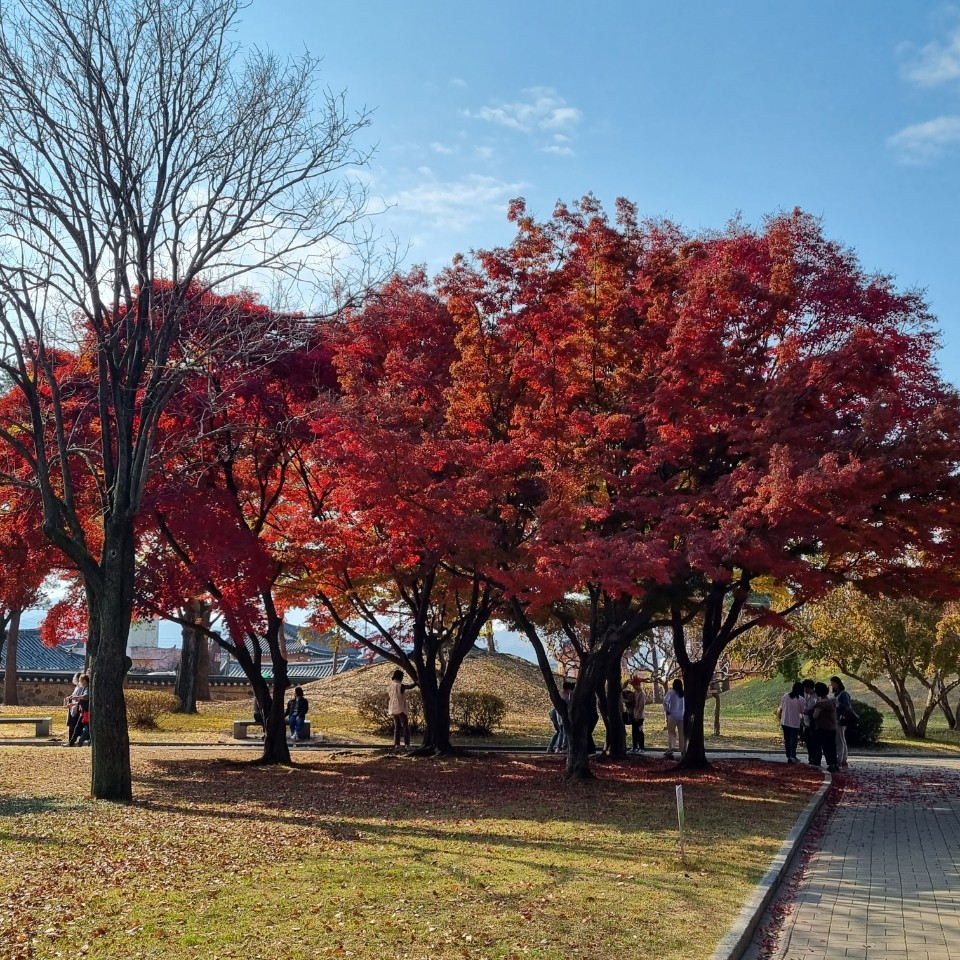

경주
휴게소
강천산 휴게소의 식당 안에 카페가 있습니다. 카페의 바닐라 번은 맛있었어요!
지리산 휴게소는 한쪽에 위 사진과 같이 정자가 있는데, 정자 안에는 멀리 보이는 지리산의 봉 이름을 알 수 있습니다.
황리단길
경주의 시그니쳐가 있는 맥주를 팔아요.
천마총으로 가는길, 분위기 있는 좌석이에요.
대릉원
대릉원 안에는 멋진 나무들이 있어요.
천마총 내부에는 유물과 구조를 볼수 있어요.
근처에는 분위기가 좋은 카페도 많이 있습니다.
경주월드
경주월드 입구의 모습이에요.
파에톤을 타로 가는길엔 멋진 동상들이 반겨주고 있어요.

메가드롭을 탑승하고있는 모습...!
경주월드 와서 재밌게 탔었던 놀이기구인 토네이도에요.
경주월드의 시그니쳐라고 할 수 있는 드라켄이에요. 입구에는 무섭게 생긴 녀석이 반겨주고 있어요. 국내 최초 90도로 다이브를 하고, 직전 멈추는게 예술이에요.
첨성대
첨성대로 가기 직전 먹었던 햄버거에요.
첨성대의 모습은 정말 멋있었어요!!